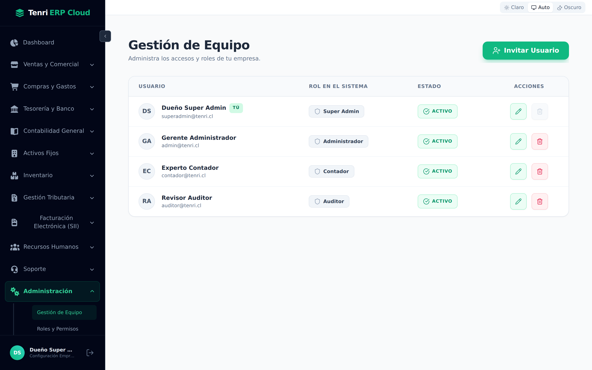
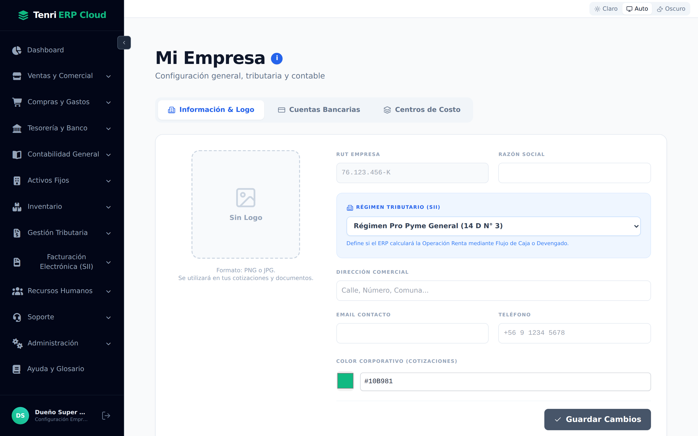
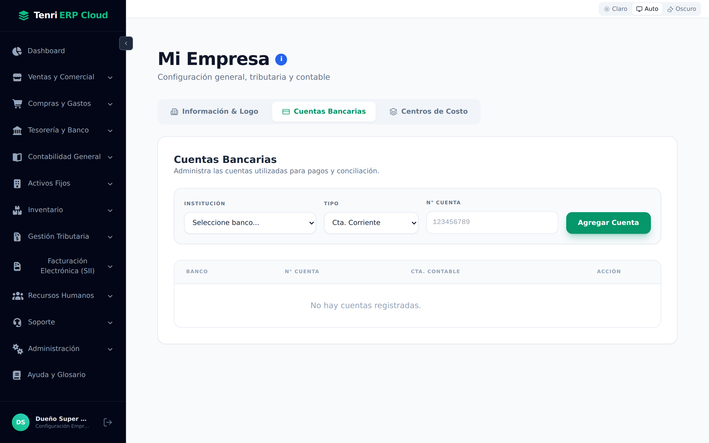
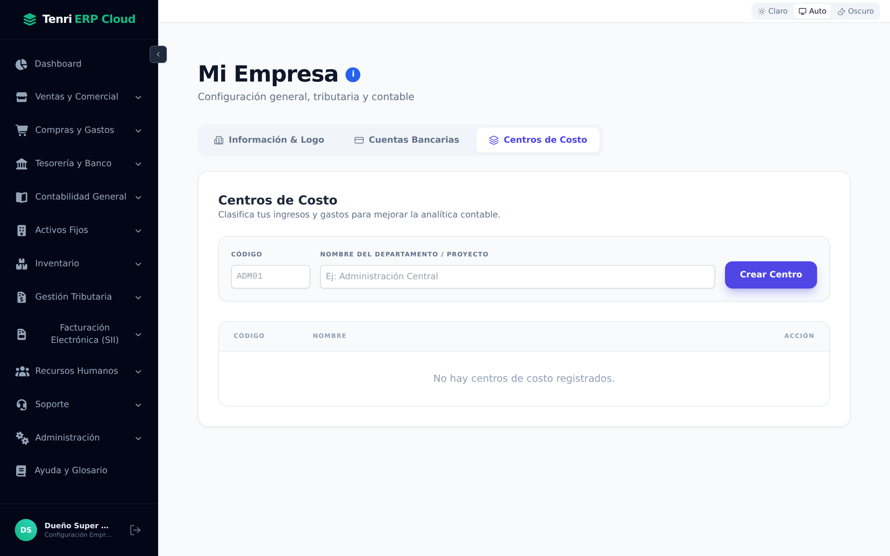
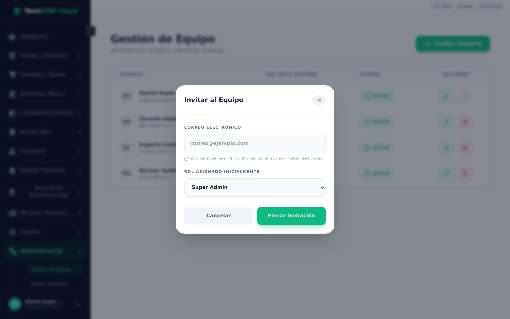
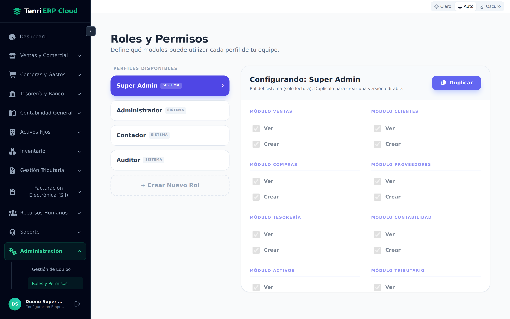
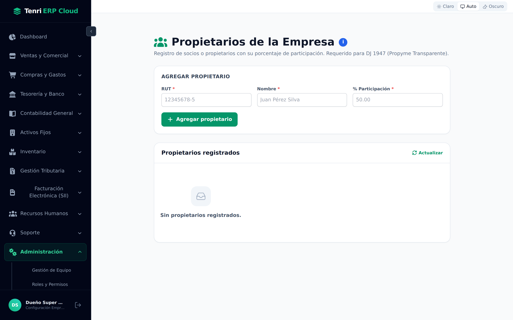
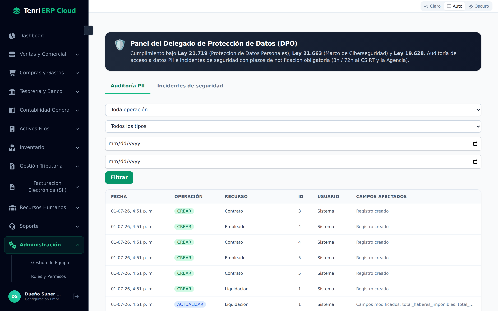

Configure su empresa, gestione el equipo de trabajo, defina roles y permisos, y mantenga el cumplimiento legal de protección de datos, todo desde un único panel.

Configuración de empresa, usuarios, roles y cumplimiento legal.
La sección Administración agrupa todo lo que define el funcionamiento del ERP para su empresa: los datos legales, las cuentas bancarias, el equipo de trabajo y sus permisos, y el cumplimiento normativo de protección de datos personales.
| Pantalla | Ruta | Para qué sirve |
|---|---|---|
| Mi Empresa | /empresa/perfil | Datos legales, logo, régimen tributario, bancos y centros de costo. |
| Gestión de Equipo | /empresa/usuarios | Lista de usuarios activos, invitación y cambio de rol. |
| Roles y Permisos | /empresa/roles | Creación y edición de roles con permisos granulares por módulo. |
| Propietarios Empresa | /empresa/propietarios | Registro de propietarios para el cumplimiento de la Ley 20.447. |
| Protección de Datos (DPO) | /cumplimiento | Auditoría de acceso a datos personales e incidentes de seguridad. |
Los datos legales y tributarios que identifican a su empresa en el ERP.
Acceda desde Administración → Mi Empresa o desde el nombre de empresa en la parte inferior de la barra lateral. La pantalla tiene tres pestañas: Información & Logo, Cuentas Bancarias y Centros de Costo.

Los campos de la pestaña Información & Logo configuran la identidad legal de la empresa en documentos y operaciones:
| Campo | Descripción |
|---|---|
| RUT Empresa | El RUT legal chileno de la empresa (se usa en DTE, F29, F22 y todos los documentos tributarios). |
| Razón Social | El nombre legal completo de la empresa tal como aparece en el SII. |
| Régimen Tributario | El régimen vigente (Renta Pro Pyme General, Renta Atribuida, etc.), que determina la tasa de impuesto y el cálculo del F22. |
| Dirección Comercial | Calle, número, comuna: aparece en las facturas electrónicas emitidas. |
| Email / Teléfono | Datos de contacto de la empresa para notificaciones del sistema. |
| Logo | Imagen en PNG/JPG que aparece en las cotizaciones y documentos PDF exportados. |
Las dos pestañas complementarias del Perfil de Empresa.


Cuentas Bancarias — Registre las cuentas con las que la empresa paga proveedores o recibe pagos. Cada cuenta requiere:
| Campo | Descripción |
|---|---|
| Institución | Banco o entidad financiera (Banco de Chile, BCI, Santander, etc.). |
| Tipo de cuenta | Cuenta corriente, vista, ahorro u otra. |
| N° de cuenta | Número completo de la cuenta bancaria. |
| Cuenta contable | La cuenta del Plan de Cuentas asociada para la conciliación bancaria. |
Centros de Costo — Divida los gastos e ingresos por área o proyecto para un análisis financiero más detallado. Cada centro tiene un código corto (p. ej., ADMIN) y un nombre descriptivo (p. ej., "Administración Central"). Una vez creados, puede asignarlos en asientos contables, compras y facturas.
Los usuarios que tienen acceso a su empresa en el ERP.
En Administración → Gestión de Equipo verá el listado de todos los usuarios que pueden ingresar al sistema con el contexto de su empresa. Para cada usuario se muestra:
| Columna | Descripción |
|---|---|
| Usuario | Nombre, correo electrónico y avatar del usuario. |
| Rol en el sistema | El rol asignado (Super Admin, Administrador, Contador, Auditor, etc.). |
| Estado | ACTIVO o INACTIVO. |
| Acciones | Editar el rol del usuario o eliminarlo del equipo. |
Presione Invitar Usuario para agregar a alguien al equipo. Solo necesita su correo electrónico y el rol inicial que tendrá. El sistema envía una invitación: si el usuario ya existe en Tenri, queda activo de inmediato; si no, recibirá un correo para crear su cuenta.

Cómo invitar a un usuario:
Defina qué puede hacer cada perfil de su equipo.
Los roles son plantillas de permisos que se asignan a los usuarios. Tenri ERP Cloud incluye roles predeterminados (Super Admin, Administrador, Contador, Auditor) y permite crear roles personalizados con acceso granular a cada módulo.

La pantalla se divide en dos paneles:
| Panel | Descripción |
|---|---|
| Perfiles disponibles | Lista de todos los roles de la empresa. Los roles del sistema (SISTEMA) no se pueden eliminar. Se pueden duplicar para crear variantes personalizadas. |
| Matriz de permisos | Al seleccionar un rol, se muestra la cuadrícula de permisos por módulo: Ver y Crear/Gestionar para cada área del ERP. |
Crear un rol personalizado:
Registro obligatorio para transparencia corporativa.
La pantalla de Propietarios registra a las personas naturales o jurídicas que poseen participación en la empresa, cumpliendo con la Ley 20.447 (Registro de Propietarios Finales). Para cada propietario se debe indicar:

| Campo | Descripción |
|---|---|
| RUT | RUT chileno del propietario (persona natural o empresa). |
| Nombre | Nombre completo del propietario o razón social si es persona jurídica. |
| % Participación | Porcentaje de participación accionaria o societaria. |
Auditoría de acceso a datos personales e incidentes de seguridad.
El Panel del Delegado de Protección de Datos (DPO) da cumplimiento a la Ley 21.719 (Protección de Datos Personales) y la Ley 21.663 (Marco de Ciberseguridad). Registra automáticamente toda operación sobre datos sensibles y gestiona los incidentes que deben notificarse a la CSIRT y la Agencia.

El panel tiene dos pestañas:
| Pestaña | Qué muestra |
|---|---|
| Auditoría PII | Log completo de operaciones sobre datos personales: creación, actualización, eliminación y lectura de empleados, contratos, liquidaciones, cuentas bancarias y más. Filtrable por operación, tipo de recurso y rango de fechas. |
| Incidentes de seguridad | Registro de brechas de seguridad con su severidad (Baja / Media / Alta / Crítica), estado (Abierto / Contenido / Cerrado) y el plazo legal de notificación (72 h al CSIRT). |
Filtros disponibles en Auditoría PII:
| Filtro | Valores posibles |
|---|---|
| Operación | Todas · CREAR · ACTUALIZAR · ELIMINAR · LECTURA |
| Tipo de recurso | Empleado · Contrato · Liquidación · Carga familiar · Cuenta bancaria empresa · Cuenta bancaria proveedor |
| Rango de fechas | Fecha desde / Fecha hasta en formato dd/mm/aaaa |
Administración centraliza la configuración legal de la empresa, el acceso del equipo y el cumplimiento normativo de protección de datos, todo desde un único panel seguro.
Datos legales, logo, régimen tributario, cuentas bancarias y centros de costo.
Invitación de usuarios, asignación de roles y permisos granulares por módulo.
Auditoría de datos personales e incidentes de seguridad según Ley 21.719 y 21.663.